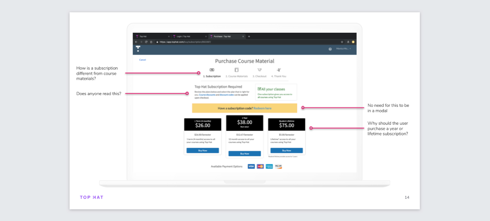
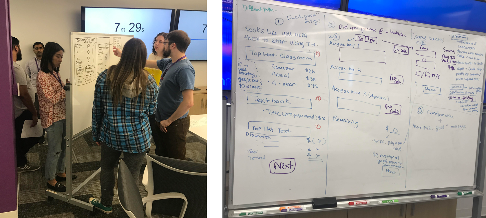
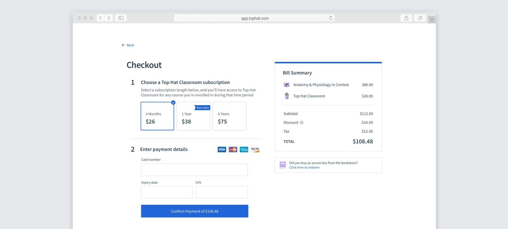
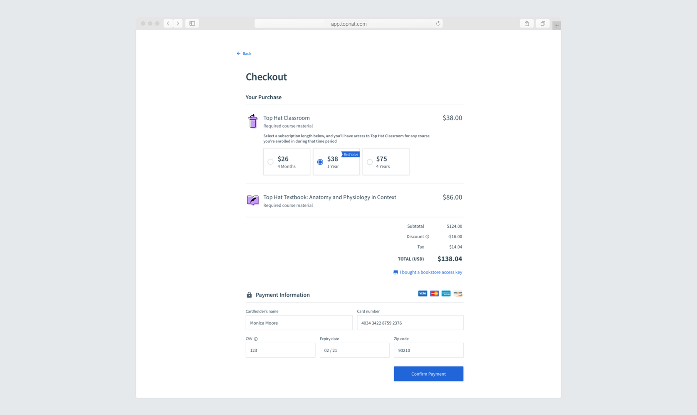
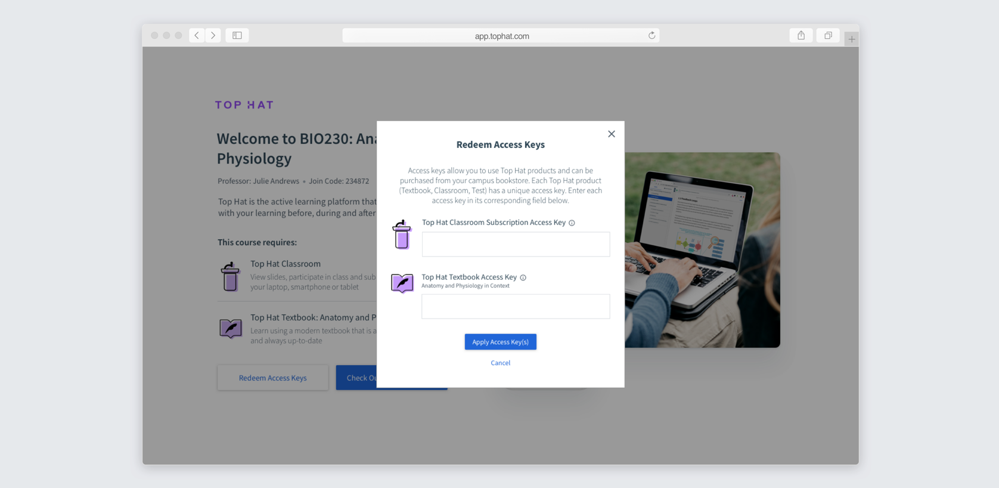
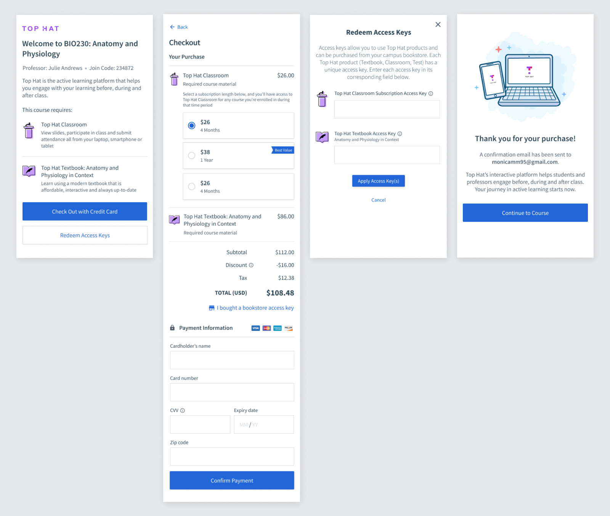
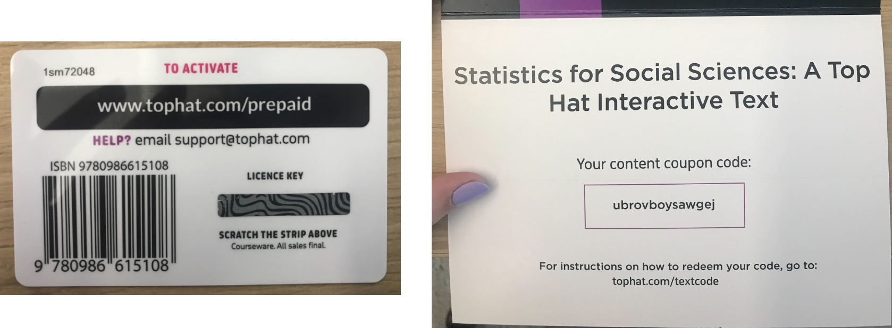
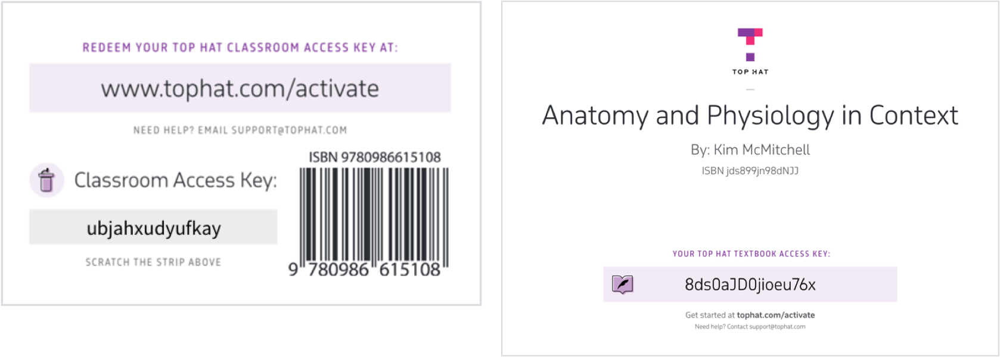

The challenge
The student checkout had been built years earlier and had become Top Hat’s largest source of student complaints. Students often didn’t understand what they were purchasing or what it cost, and bookstore access-key redemption was especially convoluted.

Benchmarking the old experience
Before redesigning anything, I wanted a baseline. I recruited 10 students who had never used Top Hat checkout and asked each of them to complete two tasks: pay by credit card and redeem a pre-purchased bookstore code. For each task I measured the task-completion rate, the error-free rate, and the time-on-task. The bookstore task had very abysmal results.
The testing confirmed that pricing, the product offering, and especially bookstore redemption needed much clearer communication. It also gave us a baseline we could compare against after launch.
Aligning the team before designing
Checkout touched far more than Product and Engineering. Pricing, bookstores, finance, support workflows, marketing, and physical access cards all shaped the experience.
I ran a workshop with nine stakeholders from across Top Hat to align on the problems we were solving, surface constraints, and generate possible approaches before moving into detailed interaction design.

The first iteration failed an important comprehension test
My first checkout concept used clear steps on the left and a receipt-style bill summary on the right. In testing, students often missed the bill summary and believed they were only paying for Top Hat Classroom and missed the textbook price altogether.
That was unacceptable for a purchase experience, so I changed direction.

Key product decisions
Start with a welcome page that confirms the course and required products before asking students to choose how they’ll pay.
Move the items and pricing into the main checkout flow rather than relying on a separate summary that could be missed.
Give every required product its own labelled access-key input so students understand when multiple codes are needed.
The bookstore cards were part of the same journey, so terminology and product cues needed to match the digital checkout.
The redesigned checkout flow
Students first see the course they’re joining and the products it requires. From there, they can redeem access keys or continue to credit-card checkout.
I intentionally left pricing off of this page, as there is often a discrepancy between online pricing and bookstore pricing, which led to many complaints + confusion. This way, students who already purchased at the bookstore, would not see any prices.
Credit-card checkout keeps the purchase details above the payment information so students can see exactly what they are being charged before entering payment details.

For students who purchased through a bookstore, the access-key modal maps each code directly to the product it unlocks rather than treating redemption as one ambiguous step. This was to address a key usability problem that users were often unaware that each item required its own access key. I worked closely with engineering to ensure there was extensive error handling. If the user put the code in an the wrong input field, it would still accept it!

The flow was also designed responsively rather than treating mobile as an afterthought.

Extending the experience to the bookstore
For bookstore customers, the checkout journey actually started with a physical card. The existing cards used inconsistent terms — license key, content coupon code, subscription code — and offered very little instruction.
I worked with a Marketing designer and coordinated with Marketing, Finance, the print company, and bookstores so the physical and digital parts of the experience used consistent terminology and clearer product cues.


Next semester — helping students make a better pricing decision
The following semester, we revisited how subscription pricing was presented. Previously, students were shown prices without much context for how long they might actually use Top Hat.
We redesigned the subscription options to make the monthly cost and upfront charge easier to compare, and added institution-level usage context — for example, how many courses at the student’s school were already using Top Hat. That gave students more information to judge whether a longer subscription was likely to be worthwhile.

After changing how the subscription options were presented, the number of students choosing the 1-year subscription doubled.
Results
Checkout-related support tickets fell from 3,054 to 820 — roughly a three-quarter reduction in the issue that had originally made checkout such a costly problem for the business.
Thirty percent of students, or 123,000 people, answered the post-checkout survey. 56% rated the new experience positively and 32% neutrally. Most negative feedback was about price rather than difficulty using the checkout itself.
The redesign dramatically reduced Support volume, while the following semester’s pricing iteration doubled adoption of the 1-year subscription.